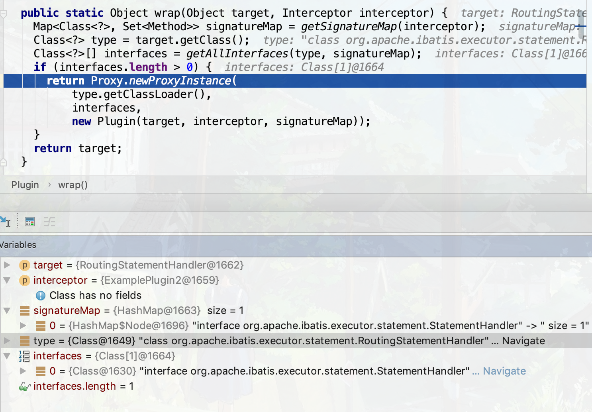
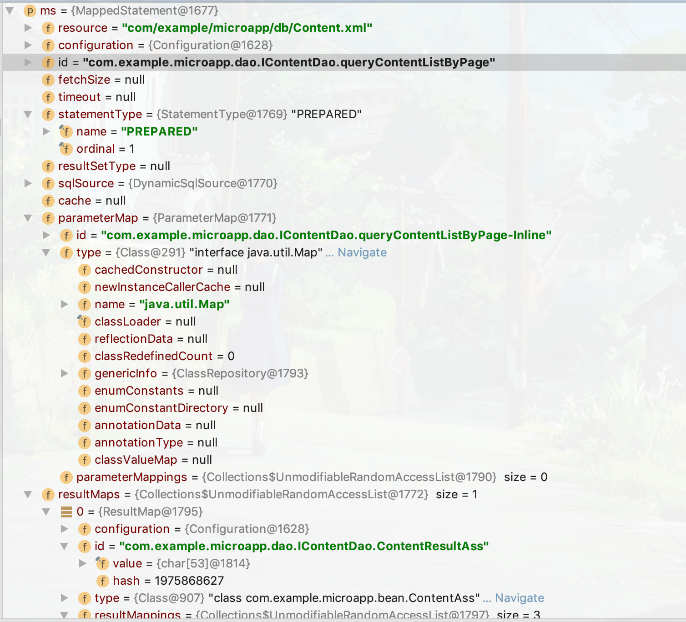
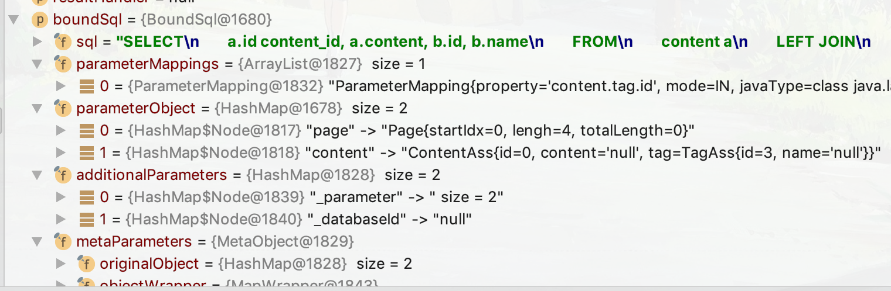
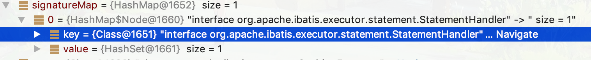
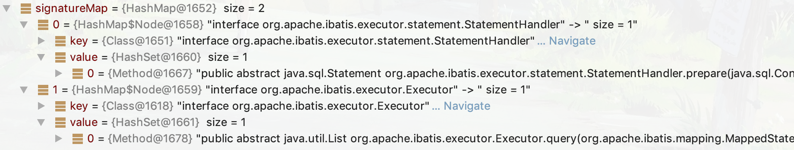
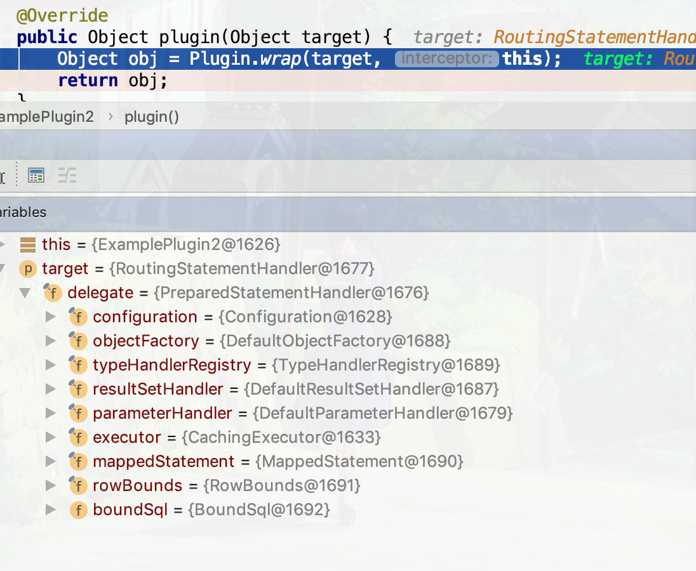
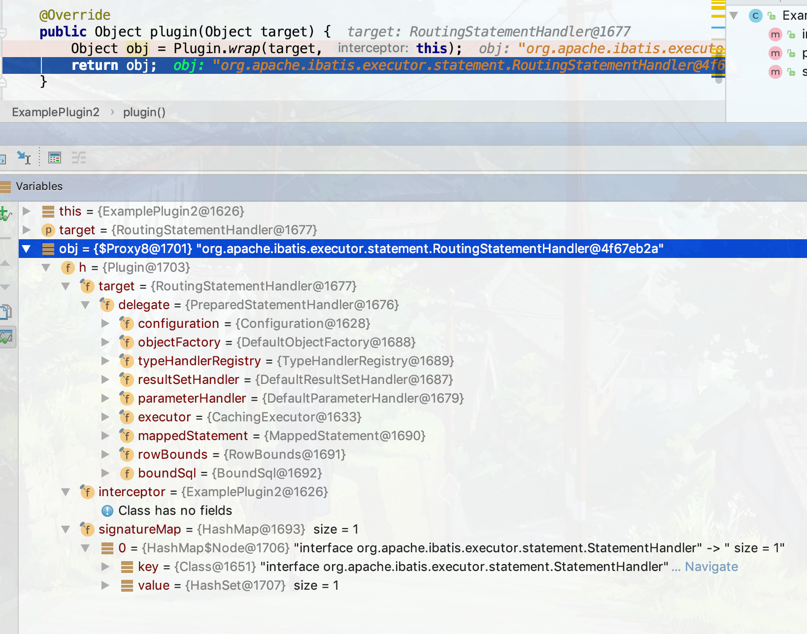
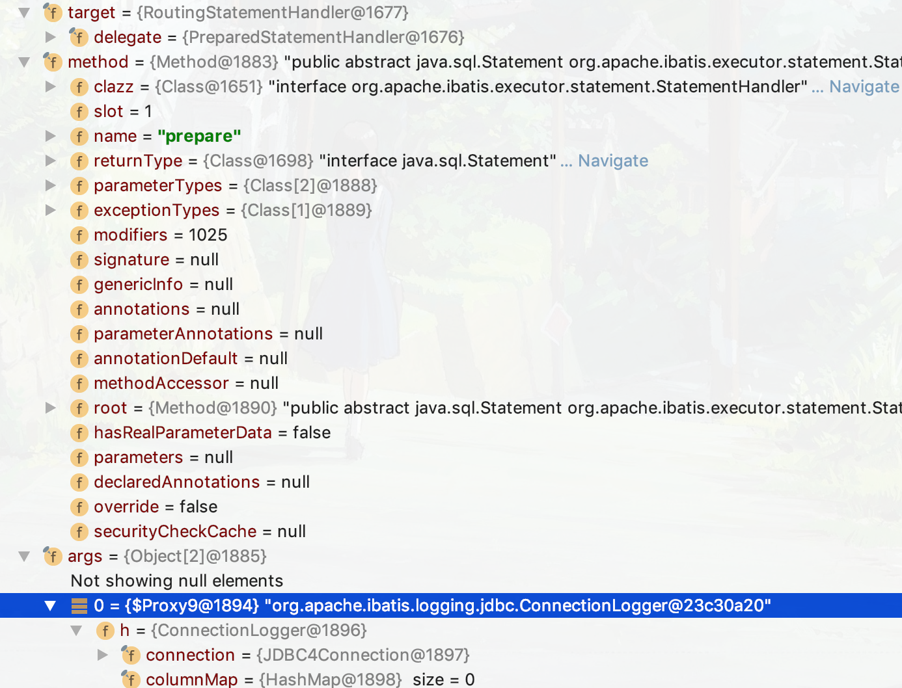
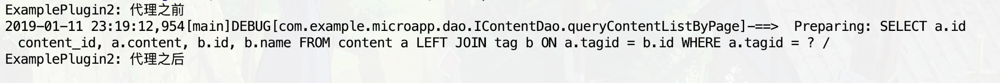

学习来源 通过自动回复机器人学Mybatis—加强版
主要目的是在了解MyBatis的拦截器大体的执行步骤
初步印象 大体上和 Servlet 的 Filter 差不多，就是拦截指定请求，并对其作出相应的处理，但是感觉明显比 Filter设置的要复杂，因为牵涉到了代理机制。每编写一个拦截器都需要在在配置文件中注册
拦截器编码 首先新建一个类，需要实现 org.apache.ibatis.plugin.Interceptor 接口，同时要在其上写 @Intercepts 注解，大体如下
这个拦截器会拦截所有sql准备语句的执行，也就是生成sql语句的方法
1 2 3 4 5 6 7 8 9 10 11 12 13 14 15 16 17 18 19 20 21 22 23 24 25 26 27 28 29 30 31 32 33 34 35 36 37 @Intercepts (@Signature (type = StatementHandler.class, method = "prepare" , args ={Connection.class, Integer.class} ))public class ExamplePlugin2 implements Interceptor @Override public Object intercept (Invocation invocation) throws Throwable Object target = invocation.getTarget(); Method method = invocation.getMethod(); Object[] args = invocation.getArgs(); System.out.println("ExamplePlugin2: 代理之前" ); Object result = invocation.proceed(); System.out.println("ExamplePlugin2: 代理之后" ); return result; } @Override public Object plugin (Object target) return Plugin.wrap(target, this ); } @Override public void setProperties (Properties properties) } }
注解 @Intercepts 中的 @Signature中的 type 根据官方文档有如下几个选项，都是一些接口，是生成动态代理函数的 Proxy.newProxyInstance 填写的第二个参数中的值。
Executor (update, query, flushStatements, commit, rollback, getTransaction, close, isClosed)
ParameterHandler (getParameterObject, setParameters)
ResultSetHandler (handleResultSets, handleOutputParameters)
StatementHandler (prepare, parameterize, batch, update, query)
括号中的就是第二个参数 method 的选项，而第三个是填写对应的方法的参数，比如上面的程序，使用IDE跳到 StatementHandler接口，找到 prepare 方法如下
1 2 Statement prepare (Connection connection, Integer transactionTimeout) throws SQLException ;
所以就填写两个参数类型的类名。
类中要实现的接口Interceptor的三个方法
第一个 intercept 方法是对拦截的数据进行处理的，相当于是动态代理中的起代理作用的类，注意到方法 invocation.proceed() 方法，点进去，就会发现其实就是执行反射
1 2 3 public Object proceed () throws InvocationTargetException, IllegalAccessException return method.invoke(target, args); }
而包含这个方法的 Invocation 类，私有变量就是之前在注解中写的那三个参数的映射值，详细见下面的单步调试；千万记得要调用这个方法并把结果返回，否则程序将无法进行下去。
第二个 plugin 方法是声明对目标方法的代理，使用IDE追踪点进这个方法 Plugin.wrap 查看其实现
1 2 3 4 5 6 7 8 9 10 11 12 public static Object wrap (Object target, Interceptor interceptor) Map<Class<?>, Set<Method>> signatureMap = getSignatureMap(interceptor); Class<?> type = target.getClass(); Class<?>[] interfaces = getAllInterfaces(type, signatureMap); if (interfaces.length > 0 ) { return Proxy.newProxyInstance( type.getClassLoader(), interfaces, new Plugin(target, interceptor, signatureMap)); } return target; }
就会看到 Proxy.newProxyInstance 方法，这正是声明动态代理的方法，第一个参数是被代理的对象，第二个是对其进行代理的类实现的接口，这里就上面注解中第一个参数对应的接口，第三个是被实例化的 Plugin 类，向对其进行代理的类提供被代理对象的方法以及参数信息。
第三个 setProperties 方法是用于读取在配置文件中声明的参数，比如读取下面 property 中的数据
该类编码完毕之后需要在主配置文件中声明一下，操作如
1 2 3 4 5 6 7 8 9 10 11 12 <?xml version="1.0" encoding="UTF-8" ?> <!DOCTYPE configuration PUBLIC "-//mybatis.org//DTD Config 3.0//EN" "http://mybatis.org/dtd/mybatis-3-config.dtd"> <configuration > <plugins > <plugin interceptor ="com.example.microapp.db.plugin.ExamplePlugin2" > <property name ="key" value ="value" /> </plugin > </plugins > ..... </configuration >
拦截器单步调试 进行debug的目的主要是要查看几个关键值的内容
实现动态代理的这段代码中的这些变量都是什么
1 2 3 4 return Proxy.newProxyInstance( type.getClassLoader(), interfaces, new Plugin(target, interceptor, signatureMap));

（注意当前语句已经执行完毕了）可以看到，target，也就是实现代理的类名为 org.apache.ibatis.executor.statement.RoutingStatementHandler，它实现了 StatementHandler 接口的所有方法，当然，也包括 prepare 方法，下面为其构造函数的源码
1 2 3 4 5 6 7 8 9 10 11 12 13 14 15 16 17 18 19 20 21 public class RoutingStatementHandler implements StatementHandler private final StatementHandler delegate; ublic RoutingStatementHandler (Executor executor, MappedStatement ms, Object parameter, RowBounds rowBounds, ResultHandler resultHandler, BoundSql boundSql) { switch (ms.getStatementType()) { case STATEMENT: delegate = new SimpleStatementHandler(executor, ms, parameter, rowBounds, resultHandler, boundSql); break ; case PREPARED: delegate = new PreparedStatementHandler(executor, ms, parameter, rowBounds, resultHandler, boundSql); break ; case CALLABLE: delegate = new CallableStatementHandler(executor, ms, parameter, rowBounds, resultHandler, boundSql); break ; default : throw new ExecutorException("Unknown statement type: " + ms.getStatementType()); } } ..... }
对于那几个传入构造函数的参数
Executor executor 接口 使用的是CachingExecutor，作用暂时没看懂，貌似使其某种缓存的作用，先打个记号后面研究MappedStatement ms 这个里面好像存储了配置当前sql语句的mapper的信息，当前sql的mapper如下
1 2 3 4 5 6 <mapper namespace ="com.example.microapp.dao.IContentDao" > ..... <select id ="queryContentListByPage" parameterType ="java.util.Map" resultMap ="ContentResultAss" > ...... </select > </mapper >
而这个里面存储的部分值如下图

Object parameter 是一个Hashmap，存入的传入查询的参数RowBounds rowBounds 是最大行数限制，从0到2147483647ResultHandler resultHandler 貌似是对结果的处理，此时为null，有一篇文章是讲这个的，先mark一下 MyBatis 中使用流式查询避免数据量过大导致OOM BoundSql boundSql 存储一切和当前sql有关的数据

而其中的switch语句中的选项，就是这里大写字母为枚举类型
1 2 3 4 package org.apache.ibatis.mapping;public enum StatementType { STATEMENT, PREPARED, CALLABLE }
分别是sql的几种方式，直接执行，预编译，调用sql过程，这里使用到是预编译，也就是代理 PreparedStatementHandler，这个类先放一放，接着往下看 prepare 方法
1 2 3 4 5 6 7 public class RoutingStatementHandler implements StatementHandler ...... @Override public Statement prepare (Connection connection, Integer transactionTimeout) throws SQLException return delegate.prepare(connection, transactionTimeout); } }
调用的是 PreparedStatementHandler 的 prepare 方法，别的方法也都是调用相应的 delegate 的实例的方法，怪不得叫这个命令，原来只是像servlet一样起到一个路由(route)的作用。那就看 PreparedStatementHandler 类吧，先看它的构造方法
1 2 3 4 5 6 public class PreparedStatementHandler extends BaseStatementHandler public PreparedStatementHandler (Executor executor, MappedStatement mappedStatement, Object parameter, RowBounds rowBounds, ResultHandler resultHandler, BoundSql boundSql) super (executor, mappedStatement, parameter, rowBounds, resultHandler, boundSql); } ..... }
调用了它继承的 BaseStatementHandler 父类的信息
1 2 3 4 5 6 7 8 9 10 11 12 13 14 15 16 17 18 19 20 21 22 public abstract class BaseStatementHandler implements StatementHandler protected BaseStatementHandler (Executor executor, MappedStatement mappedStatement, Object parameterObject, RowBounds rowBounds, ResultHandler resultHandler, BoundSql boundSql) this .configuration = mappedStatement.getConfiguration(); this .executor = executor; this .mappedStatement = mappedStatement; this .rowBounds = rowBounds; this .typeHandlerRegistry = configuration.getTypeHandlerRegistry(); this .objectFactory = configuration.getObjectFactory(); if (boundSql == null ) { generateKeys(parameterObject); boundSql = mappedStatement.getBoundSql(parameterObject); } this .boundSql = boundSql; this .parameterHandler = configuration.newParameterHandler(mappedStatement, parameterObject, boundSql); this .resultSetHandler = configuration.newResultSetHandler(executor, mappedStatement, rowBounds, parameterHandler, resultHandler, boundSql); } ... }
看起来像是初始化一些配置信息，其中的一些参数之前提到过
出栈出栈，去看 PreparedStatementHandler 中的 prepare 方法，然而并没有，那看来还是在父类 BaseStatementHandler 中的了，此处略去了处理异常的语句
1 2 3 4 5 6 7 8 9 10 11 12 public abstract class BaseStatementHandler implements StatementHandler .... @Override public Statement prepare (Connection connection, Integer transactionTimeout) throws SQLException ErrorContext.instance().sql(boundSql.getSql()); Statement statement = null ; statement = instantiateStatement(connection); setStatementTimeout(statement, transactionTimeout); setFetchSize(statement); return statement; } }
ErrorContext 貌似使其记录信息，这里就不深究了，找了一篇文章Mybatis源码研究之ErrorContext ，后面有空看，第三行的 instantiateStatement 是一个抽象方法，由子类实现 PreparedStatementHandler
1 protected abstract Statement instantiateStatement (Connection connection) throws SQLException
下面是 PreparedStatementHandler 的实现，一眼就看到了 connection.prepareStatement，一路追下来真是不容呀啊
1 2 3 4 5 6 7 8 9 10 11 12 13 14 15 16 @Override protected Statement instantiateStatement (Connection connection) throws SQLException String sql = boundSql.getSql(); if (mappedStatement.getKeyGenerator() instanceof Jdbc3KeyGenerator) { String[] keyColumnNames = mappedStatement.getKeyColumns(); if (keyColumnNames == null ) { return connection.prepareStatement(sql, PreparedStatement.RETURN_GENERATED_KEYS); } else { return connection.prepareStatement(sql, keyColumnNames); } } else if (mappedStatement.getResultSetType() != null ) { return connection.prepareStatement(sql, mappedStatement.getResultSetType().getValue(), ResultSet.CONCUR_READ_ONLY); } else { return connection.prepareStatement(sql); } }
别的不同类型的sql语句当然创建的方法不一样了，分别为 connection.createStatement 和 connection.prepareCall
这种设计思想蛮有意思的，父类有不同的子类继承，如果多个子类使用的同一个方法十分相似，但还是有些不同，那就把那个方法用父类实现，而不同的地方封装成一个抽象函数，要求用子类分别实现。
剩下的步骤貌似就是一些参数设置，不看了。
剩下的几个参数就比较简单了，interceptor 就是自己实现的拦截器的实例，因为之前传入的是this参数嘛，而 signatureMap 存放的是一个HashMap，存放的值key就是在拦截器顶上的注解 @Signature中的type的完整的类名

为什么用HashMap存放？需要看一下存放注解 @Intercepts 的@Intercepts的源码
1 2 3 4 5 6 @Documented @Retention (RetentionPolicy.RUNTIME)@Target (ElementType.TYPE)public @interface Intercepts { Signature[] value(); }
原来可以放多个 @Signature 注解，那就放两个看看效果
1 2 3 4 5 6 @Intercepts ( {@Signature (type = StatementHandler.class, method = "prepare" , args = {Connection.class, Integer.class}), @Signature (type= Executor.class, method="query" , args={MappedStatement.class, Object.class, RowBounds.class, ResultHandler.class})}) public class ExamplePlugin2 implements Interceptor ...... }
结果如下

不对呀，type 为什么会是 CachingExecutor，我是多虑了，因为他没有实现相关接口，所以代码interfaces.length长度为0，并不会进行动态代理。把关键代码再贴一下
1 2 3 4 5 6 7 8 9 10 11 12 13 14 public class Plugin implements InvocationHandler public static Object wrap (Object target, Interceptor interceptor) Map<Class<?>, Set<Method>> signatureMap = getSignatureMap(interceptor); Class<?> type = target.getClass(); Class<?>[] interfaces = getAllInterfaces(type, signatureMap); if (interfaces.length > 0 ) { return Proxy.newProxyInstance( type.getClassLoader(), interfaces, new Plugin(target, interceptor, signatureMap)); } return target; } }
之前的数据显示在 signatureMap 中只有接口 interface org.apache.ibatis.executor.statement.StatementHandler,所以只有实现了这个接口的类才会进行动态代理。
接下来依次有 DefaultParameterHandler, DefaultResultSetHandler进过这个方法，但是由于都没有实现接口 StatementHandler而被无视，直到 RoutingStatementHandler 的出现，到了第一个return，返回动态代理实例
进去的时候是这样子的

出来的东西是这样子

叫$Proxy8的自动生成的代理类，如果为JVM添加了参数 -Dsun.misc.ProxyGenerator.saveGeneratedFiles=true，那应该就可以在项目根目录下找到那个了类 com/sun/proxy/$Proxy8.class
用IDE打开查看，果然接口 StatementHandler 中定义的都被invoke了
1 2 3 4 5 6 7 8 9 10 11 12 13 14 15 16 17 18 19 public final class $Proxy8 extends Proxy implements StatementHandler ...... public final void batch (Statement var1) throws SQLException public final List query (Statement var1, ResultHandler var2) throws SQLException public final Statement prepare (Connection var1, Integer var2) throws SQLException ..... static { try { ...... m6 = Class.forName("org.apache.ibatis.executor.statement.StatementHandler" ).getMethod("batch" , Class.forName("java.sql.Statement" )); m5 = Class.forName("org.apache.ibatis.executor.statement.StatementHandler" ).getMethod("query" , Class.forName("java.sql.Statement" ), Class.forName("org.apache.ibatis.session.ResultHandler" )); m2 = Class.forName("java.lang.Object" ).getMethod("toString" ); m4 = Class.forName("org.apache.ibatis.executor.statement.StatementHandler" ).getMethod("prepare" , Class.forName("java.sql.Connection" ), Class.forName("java.lang.Integer" )); ..... } catch (NoSuchMethodException var2) { ..... } } }
后面就执行到方法 intercept 了
1 2 3 4 5 6 7 8 9 10 11 12 13 14 15 16 17 18 19 @Intercepts (@Signature (type = StatementHandler.class, method = "prepare" , args = {Connection.class, Integer.class}))public class ExamplePlugin2 implements Interceptor @Override public Object intercept (Invocation invocation) throws Throwable Object target = invocation.getTarget(); Method method = invocation.getMethod(); Object[] args = invocation.getArgs(); System.out.println("ExamplePlugin2: 代理之前" ); Object result = invocation.proceed(); System.out.println("ExamplePlugin2: 代理之后" ); return result; } .... }
三个值如下

这里的代理方法的名字就是注解里写的，而方法参数应该就是注解里写的的第三个参数数组，但是那个类型为Integer的参数我没有设置，所以就为空了，是用来设置超时的，同时，另外一个参数有生成了一个动态代理类，$Proxy9，应该和之前的那个是在一起的，这里就不去查看了
当执行到return语句时，打印输出如下

可以看出，可以在创建sql语句的前后时间段内搞一些小动作，下一篇笔记就记录一下使用拦截器实现分页查询功能